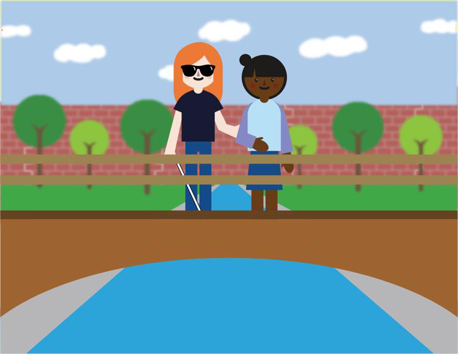

Progress
{{ updateProgress() }}%
What can you expect from the volunteering experience with Travel
Hands?
-
Guide blind or partially sighted people or Visually Impaired People
(VIP) as per your flexibility.
- Increase your physical activity by walking more.
- Make new friends, have fun, and enjoy meaningful conversations.
-
Personal growth while learning about new things, cultures, different
backgrounds and different mindsets.
-
Boost self-confidence and professional growth practicing interpersonal
communication skills.
- Become more empathetic.
-
Learn more about yourself (how do you react to new experiences, new
people, etc...)
-
By completing journeys, you will unlock perks such as free hot drinks
or discount coupons from our affiliated partners.
IF YOU HAVE ANY DOUBT PLEASE DON’T HESITATE TO CONTACT US.
Mail: volunteer@vipworldservices.com
Phone number : +44 2039661650
Mark as completed
What are the boundaries of the volunteering activities?
-
Don’t feel pressured to do anything more than walking with the
VIP or performing the activity that was requested through us.
-
In the event a VIP requests anything other than what was previously
agreed when you accepted the journey, please report it to us.
- Only meet in public spaces.
Mark as completed
General Tips
-
Always ask the VIP how they prefer to be guided. We will teach you the
best practice, however it is good practice to adapt according to VIP’s
preferences and your level of comfort.
-
Charge your phone before you leave so that you can share your GPS
location during the journey and communicate with us if necessary.
-
It is important to remember that guide dogs are working animals. You
should ask the owner of a guide dog before you touch their dog, so you
do not distract them.
- Be on time (if possible, arrive 5 minutes early)
- Update your availability during the week for accurate matches
- Check notifications through our communication channel
-
To protect against COVID-19, wear a mask. This is a legal requirement
when inside buildings and on public transport.
- Use the suggested route recommended by us.
-
Inform us if you face any misconduct, emergencies or requests out of
the service.
- In case you are late, inform us as soon as possible.
Mark as completed
Do not
- Go to private spaces such as house premises of the VIP.
-
Grab, push or pull a VIP unless a situation of unexpected danger
arises which requires you to have direct physical contact to save them
and yourself.
- Grab their cane. That is what they use to sense their path.
- Use cash machines on behalf of the VIP.
-
Read personal details such as home address or phone number out loud if
the VIP requests you to read a document.
-
Touch or physically embrace VIP in case they look emotional or
vulnerable - not everyone would appreciate and can be considered as a
form of harassment.
Mark as completed
Do not be overprotective.
-
Many VIPs have been dealing with their disability for a long time.
While it is important you let them know of an oncoming vehicle or a
low-hanging tree branch, try not to be overly protective. Only advise
a VIP to move or duck when it's necessary.
*Note* Overprotection of the person with a visual impairment can cause
lowered self-esteem that may result in a feeling of underachievement.
Mark as completed
Describe the passing scene.

Just as you might enjoy the scenery when you walk, many VIPs enjoy
having scenes described to them. While you are walking, it can be nice
to tell them about anything noticeable or interesting that you see.
However, use discretion. Some people may prefer to walk in silence or
may find excessive chatter distracting. It's a good idea to ask first
before you describe the scene.
Mark as completed
Give directions verbally.
Many people use non-verbal cues, like pointing, when giving directions.
You may do this without even thinking when giving directions to VIPs.
However, try to remember you need to give out specific verbal directions
for a VIP to understand.
(E.g., "You walk three blocks forward on this street and then take a
left." Do not point forward and say, "It's three blocks that way.")
Mark as completed
Relax.
Don't be embarrassed if you use common expressions such as “See you
later” or “Did you watch the movie this weekend?”. VIPs use the same
expressions as those who are sighted.
Mark as completed